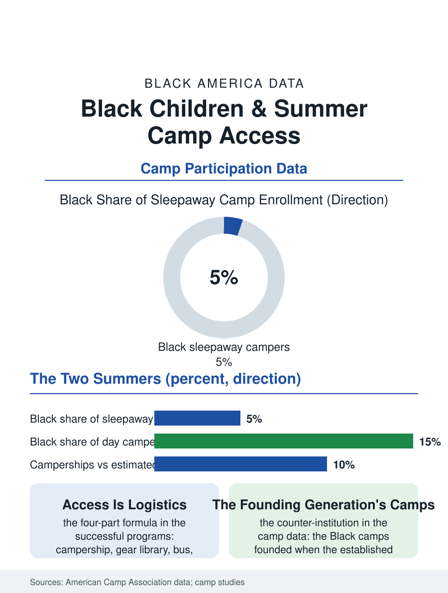

Black Education
Two Summers: Black Children and Summer Camp
Five percent of the sleepaway campers and all of the day camp's necessity: two summers, divided by the campership, the gear, and the bus. The camp file.

Summer camp is the enrichment economy's seasonal peak, and its access file divides sharply: the overnight and specialty camps of the affluent summer, the day camps of the working family's necessity, and between them the scholarship and public programs whose rosters decide which Black children get the woods, the waterfront, and the campfire's particular education. This article reads the summer camp file.
Two Summers
The participation data draw the two summers plainly: the multi-week sleepaway camp, with its tuition in the thousands and its alumni networks among the professional class's quiet assets, enrolls Black children at a small fraction of their population share in the camp associations' own data, while the day camp and the parks program, the working summer's infrastructure, enroll them at or above share, the summer's division being the child care file's seasonal form, supervision for the children of the employed against enrichment for the children of the resourced. The mechanisms are the file's standard set with a seasonal twist: the tuition and the gear, the registration's early calendar, which rewards the family that can commit in February, the transportation to the campgrounds beyond the suburbs, and the cultural familiarity, the camp tradition being an heirloom in the families that hold it and an unknown in those that do not, so that the recruitment literature treats the camp decision as an information problem the scholarship alone does not solve. The historic Black camps are the file's counter-institution: the camps founded in the segregation era when the established campgrounds refused the Black child, some still operating under their founding churches and organizations, their alumni the professional class's own and their traditions, the waterfront, the honor cabin, the closing fire, maintained as the culture's summer inheritance deliberately passed hand to hand.
What the Woods Teach
The outcome literature on camp is thinner than the sports file's but consistent on its strongest claim: the sustained outdoor program's effects on the participants' independence, social confidence, and nature relationship, with the nature file's data adding the exposure deficit the camp remediates, the Black child's access to green space in the environmental data being the lowest of the demographic groups, so that the camp week is for many campers the year's only immersion. The workforce file rides on top: the camp counselor tier is the youth employment file's summer aristocracy, the residential staff's room and board converting the wage into the summer's savings, and its Black share in the association data runs below even the camper share at the established camps, the hiring running on the alumni network the camper file's division built, while the Black camps and the urban day camps employ the community's counselors at the reciprocal pattern. The camp industry's own equity work, the associations' scholarship clearinghouses and the campership funds of the civic organizations, the Links and the fraternities' foundations among them, constitute the access system's private tier, its scale in the thousands of camperships against the need's hundreds of thousands.
The Campership and the Bus
The camp file closes on the logistics of access, which the successful programs have reduced to a formula: the campership for the tuition, the gear library for the trunk, the bus for the distance, and the trusted messenger, the church or the school whose recommendation carries the family's decision, the four parts together moving the enrollment where the scholarship alone, mailed as an announcement, did not. The public tier's expansion, the park districts' resident camps revived and the school districts' summer learning camps blending the enrichment with the summer learning file's academics, is the scale frontier, its programs posting the participation the private market's map denies. The associations count the campers each August. The file's last entry is the bus at the church lot in June, the trunks and the duffels, the mothers' instructions and the counselors' clipboards, the whole apparatus of a community sending its children to the woods it was once refused, on scholarship paper and borrowed sleeping bags where necessary, because the woods, the data and the grandmothers agree, teach things the classroom's year cannot, and the file's measure is whether the bus keeps loading. The returning campers' second summer, the programs note, needs no recruiting at all.
More in Black Education
Black Educational Attainment: High School Parity, the College Gap
About 89 percent of Black adults hold a high school diploma and one in four holds a bachelor's degree or higher — the attainment ladder, the college completion gap, and the generational trend.
Historically Black Colleges and Universities: Enrollment and Degrees
More than 100 HBCUs enroll roughly 290,000 students and award about one in six Black bachelor's degrees — an outsized share from a small sector. The federal education data.
Black College Enrollment: 2.4 Million Students
About 2.4 million Black students are enrolled in American colleges — nearly two-thirds of them women. The NCES enrollment data by sector, level, and trend.
Source: American Camp Association enrollment and workforce data; summer learning and camp outcome literature.